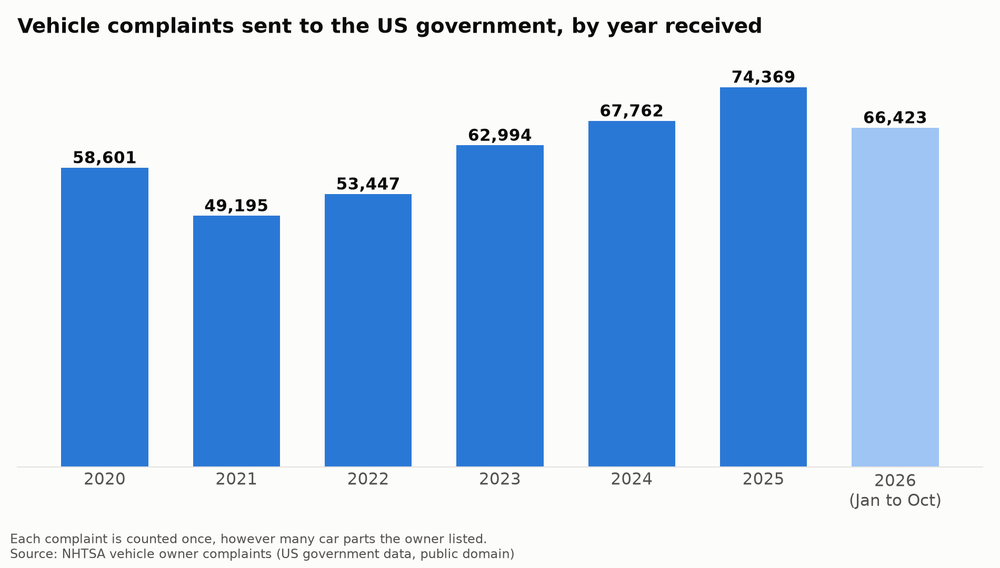

Air bags2023 NISSAN
“Vehicle airbags did not deploy when hitting a solid concrete wall at 50 mph after hydroplaning. Impact was front bumper.”
REPORT #11745554Received June 2026
Every car owner eventually meets a part that does not work the way it should. Most of the time it is an annoyance, such as a dead battery or a rattle behind the dashboard. Sometimes it is dangerous, such as brakes that feel soft, a steering wheel that locks up, or air bags that stay folded in a crash. In the United States, an owner who sees a problem like this can report it to the National Highway Traffic Safety Administration, known as NHTSA. The report is called a vehicle owner complaint, and owners can file one themselves or by phone. When they call, a staff member writes down what the owner says. NHTSA collects these complaints in a public file that anyone can download. The file we used holds 432,791 complaints received from January 2020 through October 2026. That is an average of 173 new complaints every day for almost seven years.
A complaint is a short piece of ordinary writing, and no two read alike. The typical one in our collection is 91 words long, about the length of a short paragraph. Some are a single sentence, like the owner whose air bags did not open when the car hit a concrete wall at 50 miles per hour. Others follow a problem for months, with dates, mileage and repeated trips to a dealer. Owners rarely use the names that engineers use for parts. They write that "the pedal becomes hard" or that "the steering wheel sticks" instead of naming a component. About 27 percent of the complaints we kept were written down by NHTSA staff during a phone call, in a more formal style, and the rest were written by the owners. Some owners write in anger, some in fear, and some with careful detail. All of them are trying to tell the government which part of the car failed.
“Vehicle airbags did not deploy when hitting a solid concrete wall at 50 mph after hydroplaning. Impact was front bumper.”
“The fuel pump failed in a way that it soaked my left leg with fuel while riding the motorcycle. My safety was at risk from major burns if the fuel had ignited on the exhaust. No warning lights came on.”
“Brakes make a flutter noise and pedal becomes hard while in drive through line or at a red light or any place that requires constant brake application for an extended period of time”
The number of complaints has grown in recent years. In 2021 NHTSA received 49,195 complaints, and in 2025 it received 74,369. That is about 51 percent more in four years. The count for 2026 covers only January through October, and it already stands at 66,423. Each complaint is counted once, even when the owner lists several car parts. Behind every number is a person who noticed that something about a vehicle was unsafe or broken. The numbers also show why reading every complaint by hand is hard. At the 2025 pace, NHTSA receives about 204 new complaints every day. A person who read one complaint a minute would need more than 3 hours each day just to get through them.

A complaint helps only if the right people see it. Staff at NHTSA look for patterns, such as many owners of one model reporting the same failing part. When a pattern points to a safety defect, the agency can open an investigation, and a manufacturer can be asked to recall the vehicles for repair. To spot a pattern, someone first has to know which part each complaint is about. In the NHTSA file, every complaint is filed under a group of parts, such as the engine, the steering or the air bags. People assign those groups by reading the complaints. The job is slow, and two careful readers can disagree, because a story about a car that dies on the highway could point to the engine, the fuel system or the electrical system. In fact, about 30 percent of the complaints in the file are filed under more than one group of parts, which shows how often one story touches several systems. This project asks a simple question: how well can the words an owner writes, and nothing else, tell us which part of the car failed? The rest of this website shows the data we used, the work we did to answer the question, and what we found.
TL* marker).